The main functionality of BSEditor is to create Brightspace quiz questions. These are created using the extended CSV format. You can either create new questions, or open one of the provided question templates (from File / New from Template).
You can open existing questions written using the BSGenerator extended CSV format. Please note that questions written using the Brightspace import CSV format will not work in BSGenerator. If instead you want to open QTI questions, see below how to import QTI questions.
Questions created in Brightspace and exported as QTI packages can be imported into BSGenerator. To export a question (or a set of questions) in Brightspace, go to "Module Tools" / "Module Admin", then choose "Import / Export / Copy Components":
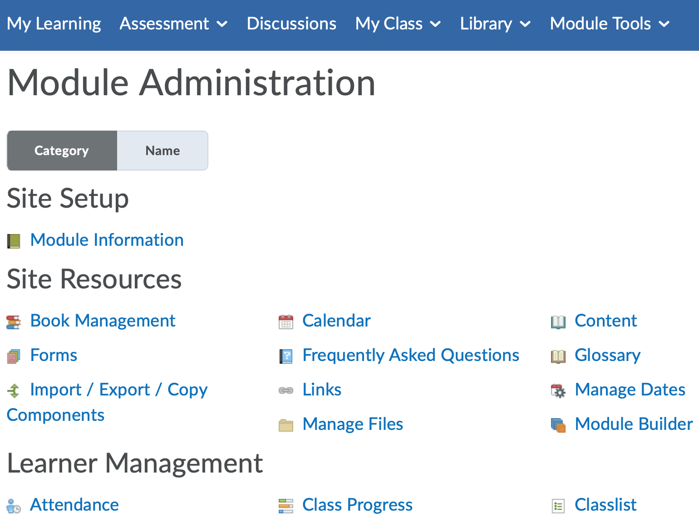
Choose "Export as Brightspace Package":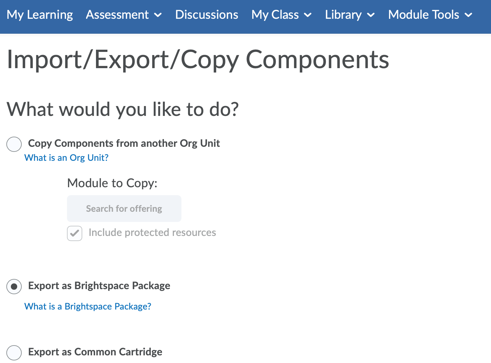
Then select what you would like to export from the Question Library ("Export all items" or "Select individual items to export"); select "Include module files in the export package" if the questions have images/files; and finally press "Export" After a short period of time, Brightspace will provide you with a link to download the QTI package.
To import a question contained in a Brightspace QTI package onto BSEditor, choose File / QTI Import (or the corresponding shortcut button). After choosing the file, you will be presented with the QTI Import dialog:
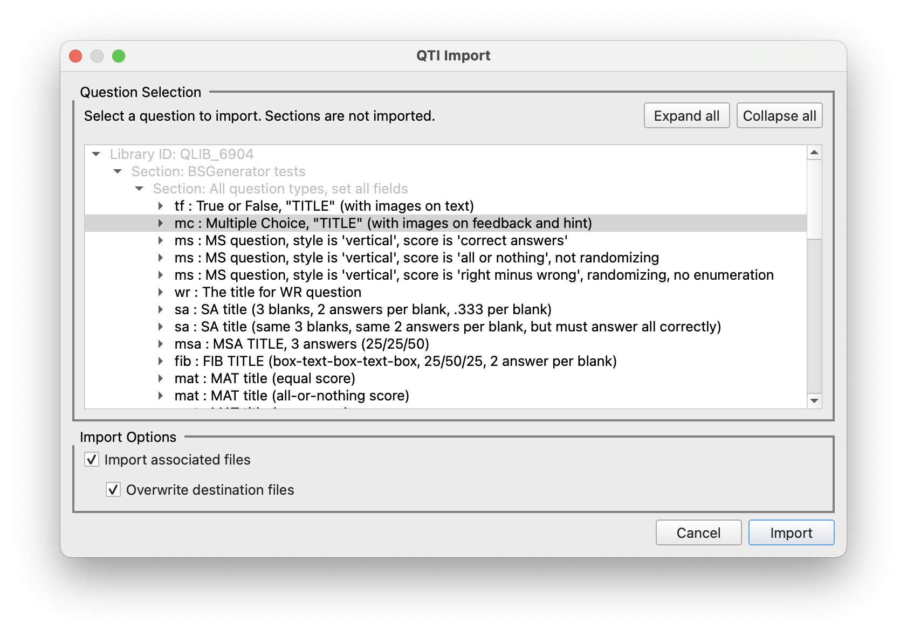
Here you can choose an existing question inside the QTI package, and import it as a BSGenerator-compliant CSV file, along with any images/attachments that the question may have.
Once a question is ready for deployment, you can export it, i.e. create a QTI
Package that contains the question. You must preview the question first, as this
ensures that the specification is correct, and also enables you to see the exact
question(s) that will be uploaded to Brightspace.
To export the question, choose the menu option "File" / "QTI Export", or use its
shortcut button. This will bring up the QTI Export dialog, shown below.
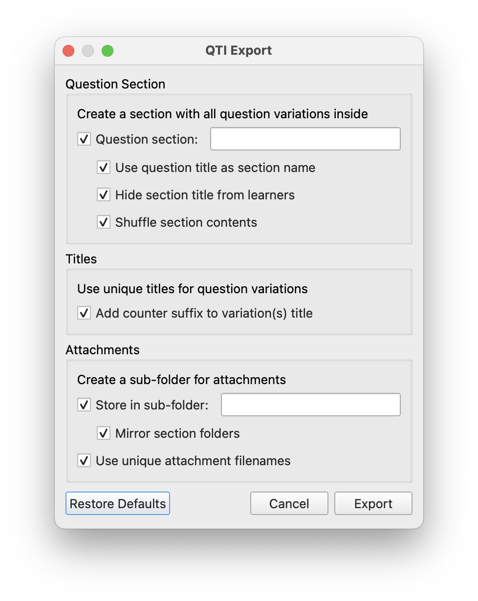
If you just want to export a single question, uncheck all options, press Export,
and choose where to save the resulting QTI package.
Any exporting errors will be shown in the Log Display.
You can also specify the following parameters:
When editing questions, it is useful to preview how they will look in Brightspace. BSEditor provides this functionality. This doubles up as a "compilation attempt" i.e. checking if the CSV specifications will create a valid question (or set of questions).
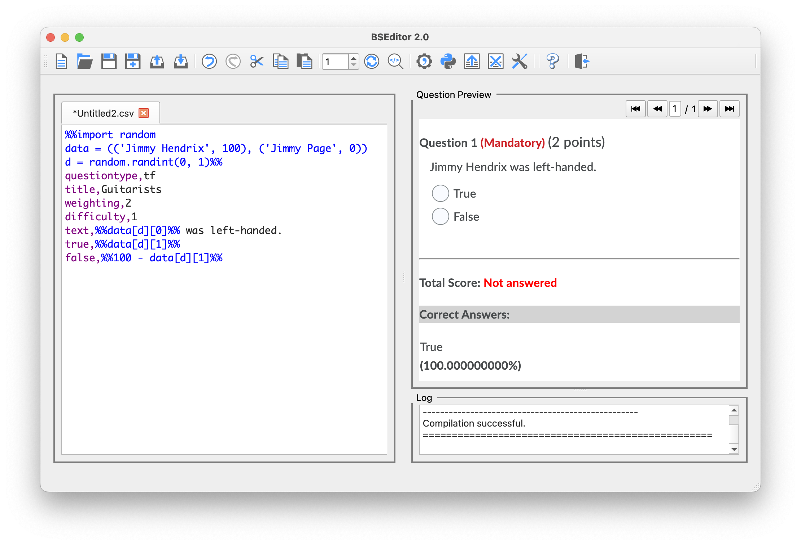
Some extra information (not shown to students) is also displayed:
When developing questions containing Python code, you can run the code several times, to generate different question variations. You can choose the number of times to compile a question variation using the selector in the Button Toolbar. The navigation buttons in the top-right corner of the Question Preview pane will then allow you to preview each question variation.
The application provides a means to inspect the resulting question database, which will be incorporated into the QTI package. The XML preview window allows the user to inspect the generated XML code, prior to exporting.
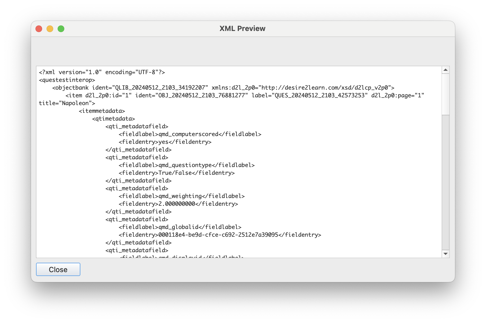
If you use Python code in your question definitions, the code is executed first, and then the resulting CSV definition is used to create a question. It is sometimes useful to carefully check that the resulting CSV definition is what you intended; the CSV Preview window provides this functionality. If more than one question variation was generated, you can inspect each resulting CSV definition, using the navigation buttons.
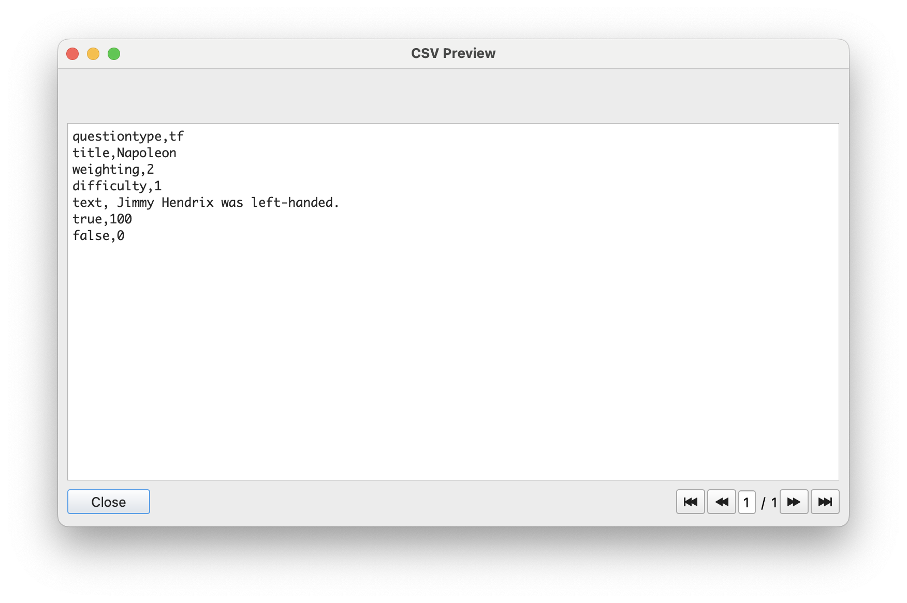
If you use Python code in your question definitions, you can inspect the values of local/global variables used in your code. This may be useful when debugging code. To this end, BSEditor provides a Python Namespace visualiser. It also allows for the namespaces to be erased.
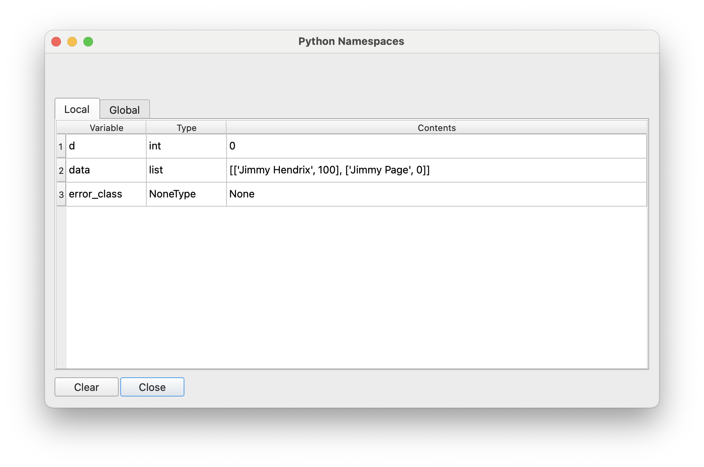
Exporting the log is a feature existing mostly for application debugging purposes, whereas clearing the log can be used mainly for data privacy reasons. Both the Export and Clear options are accessible through the Tools menu, or by using the corresponding shortcut buttons.
You can configure many aspects of the application using the settings window. These settings are groupped into three main sections (tabs):
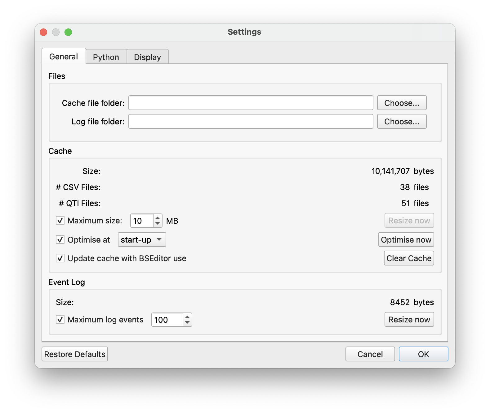
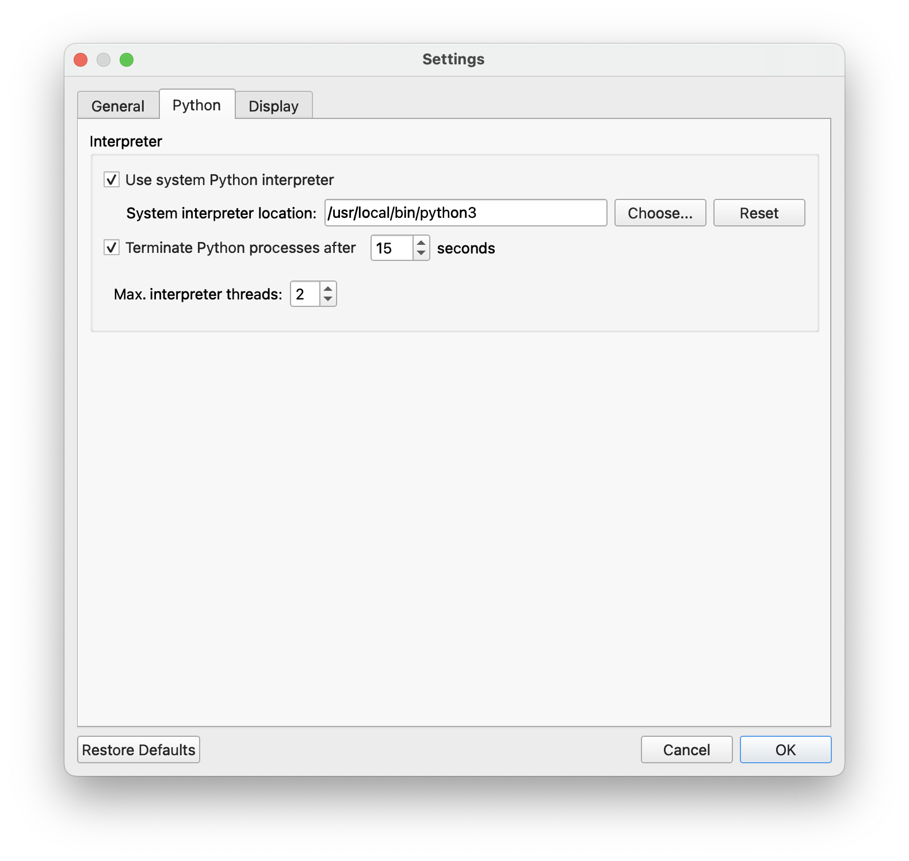
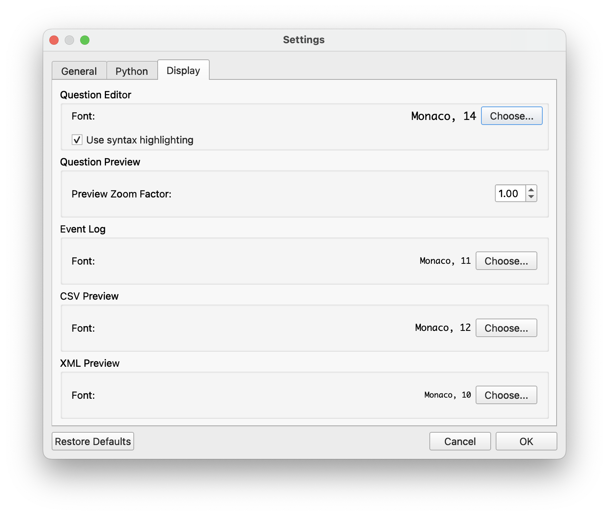
BSGenerator contains extensive documentation (the pages you are now reading). These are available directly from both BSGenerator and BSEditor.
The Quit option closes the BSEditor window, and either returns to BSGenerator (if BSEditor was launched from within it) or quits the application.